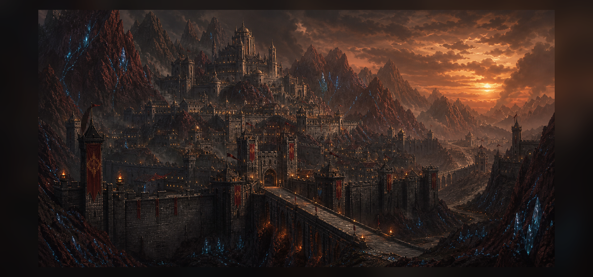

Государства / Великая держава
Велтир
Крепость руды и дисциплины, где государство важнее отдельной судьбы.

История
Велтир вырос из рудных крепостей, где выживание зависело от дисциплины, запасов руды и способности держать перевалы. Чем опаснее становились границы, тем сильнее государство связывало безопасность с подчинением общему порядку.
Политическое устройство
Власть выстроена вертикально: приказы идут сверху вниз, а служба государству считается не выбором, а естественной обязанностью. Магические школы, военные гарнизоны и рудные ведомства подчинены единому центру.
Экономика
Основа экономики - добыча и очищение руды. Велтир торгует не только сырьем, но и безопасностью: охраной караванов, военными инструкторами, специалистами по фортификации и лицензиями на магические практики.
Армия
Армия Велтира считается самой организованной силой континента. Она медленнее наёмных отрядов Маркора, но превосходит их выучкой, снабжением и способностью удерживать позиции месяцами.
Магия
Магия здесь легализована, но строго поставлена на учет. Маг Велтира - ресурс государства, а не свободный ученый. Это дает стране мощь, но делает любую личную инициативу подозрительной.
Культура
Велтирская культура уважает службу, выдержку и молчаливое исполнение долга. Праздники здесь похожи на парады, а семейная гордость часто измеряется количеством поколений, служивших в армии или рудных ведомствах.
Города
Имперский Бастион - столица приказов и архивов. Вокруг него лежат крепости, рудные поселения и города-казармы, где гражданская жизнь неотделима от обороны.
Отношения с соседями
С Маркором Велтир связан торговлей и взаимным презрением: один продает свободу, другой порядок. Элидор уважает велтирскую дисциплину, но опасается его желания контролировать любое знание.
Известные личности
В хрониках чаще упоминаются не герои-одиночки, а должности: бастионные маршалы, хранители рудных списков, магистры допуска и командующие северными перевалами.
Тёмная сторона государства
Велтир умеет превращать страх в закон. Пропаганда, культ магии и привычка оправдывать жесткость будущей безопасностью делают его опасным даже для собственных граждан.